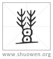

𣍈
古文豐。
清代 段玉裁《說文解字注》
- 豆之豐滿也。
謂豆之大者也。引伸之凡大皆曰豐。方言曰。豐大也。凡物之大皃曰豐。又曰。朦尨豐也。豐其通語也。趙魏之郊燕之北鄙几大人謂之豐。燕記豐人杼首。燕趙之閒言圍大謂之豐。許云豆之豐滿者、以其引伸之義明其本義也。周頌豐年傳曰。豐、大也。然則豐年亦此字引伸之義。而賈氏儀禮疏不得其解。
- 从豆。象形。
𠁳象豆大也。此與豐上象形同耳。戴侗云。唐本曰从豆、从山、？聲。蜀本曰丰聲。山取其高大。按生部云。丰、艸盛丰丰也。與豐音義皆同。大射儀注曰。豐其爲字从豆𠁳聲。近似豆、大而卑矣。似鄭時有𠁳字。但鄭注轉寫至今亦多譌誤。𠁳聲之聲或是賸字。儀徵阮氏元說？字瓦云。豐字當是？聲而山象形。豐字當是？聲而凵象形。一从艸盛之？。一从艸蔡之丯也。玉裁按。竝？、竝丯、說文無字。如朁鬵字从兓聲、蒜字从祘聲、飆䯂字从猋聲驫聲、？？字从林皆非無字者也。則唐本、蜀本未可遽信。？戎切。九部。
- 一曰鄉飮酒有豐矦者。
此別一義。鄉當作禮。與觚下、觶下之誤同。禮飮酒有豐矦。謂鄉射、燕、大射、公食大夫之豐也。鄭言其形云似豆卑而大。說者以爲若井鹿盧。言其用於鄉射、云所以承爵也。於大射、云以承尊也。公食大夫之豐亦當是承爵。燕禮之豐亦當是承尊。皆各就其篇之文釋之。禮但云豐。許云豐矦者。葢漢時說禮家之語。漢律曆志王命作策豐㓝。竹書紀年。成王十九年黜豐矦。阮諶曰。豐、國名也。坐酒亡國。崔駰酒箴曰。豐矦沈湎。荷罌負缶。自戮於世。圖形戒後。李尤豐矦銘曰。豐矦荒謬。醉亂迷迭。乃象其形。爲禮戒式。後世傳之。固無正說。三君皆後漢人。諶撰三禮圖者。漢人傅會禮經有豐矦之說。李尤以爲無正說。鄭不之用。許則襲禮家說也。